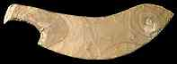

|
What other weapons were used in ancient Egypt?
Mace
The mace was a type of club that was used in battles. It was a powerful weapon, made of stone and wood, that could be deadly if the person using it was very strong.
|

Ivory fragment showing pharaoh with mace
|
Sword
Swords of different lengths were used in battles in ancient Egypt. The blades were made of copper or bronze and attached to wooden handles. Many swords belonging to the pharaoh, or wealthy people were decorated with carved scenes, precious metals and valuable stones.
|
Knives
Many knives made of flint, copper, and bronze have been found in Egypt. Knives were used as weapons, but also as tools in everyday life for cutting rope, or animal hides.
|

Flint knife
|
Back...
|